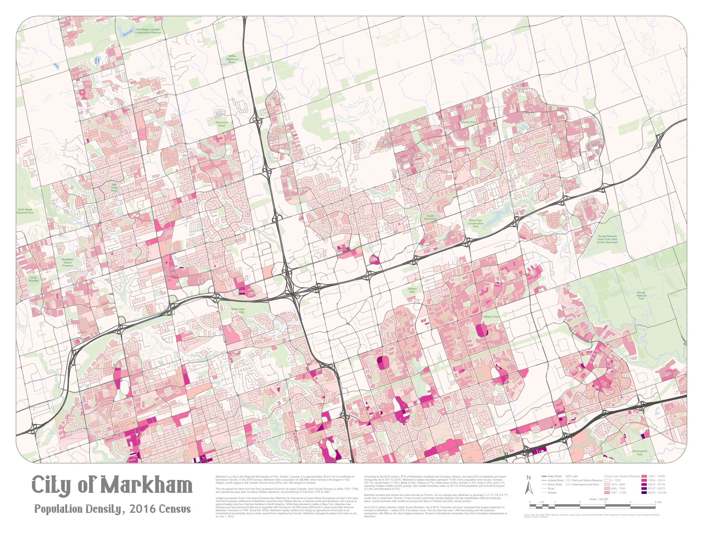
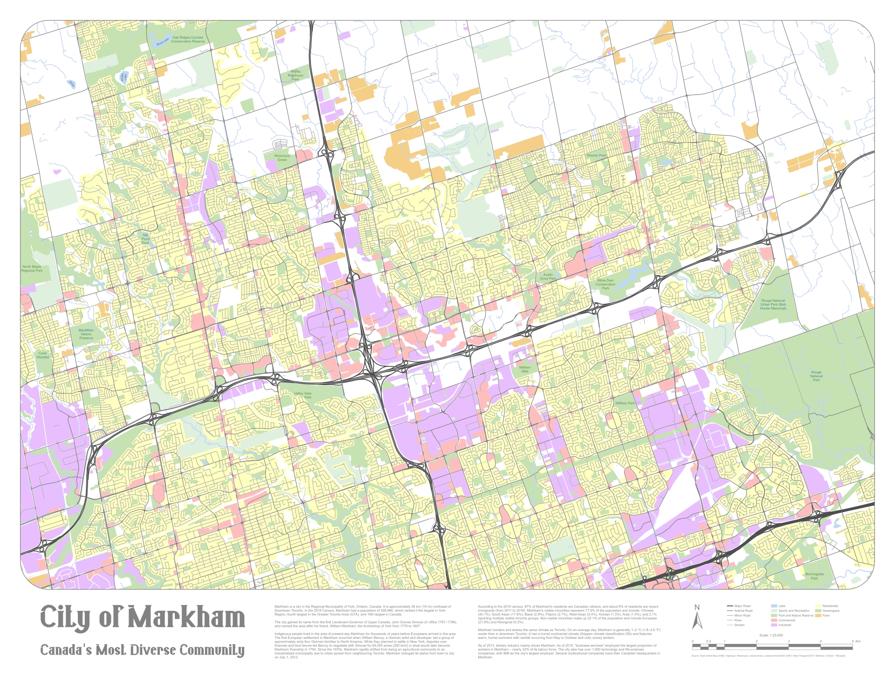
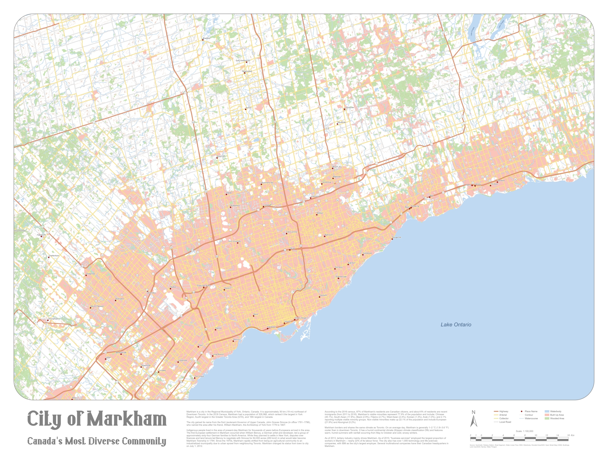
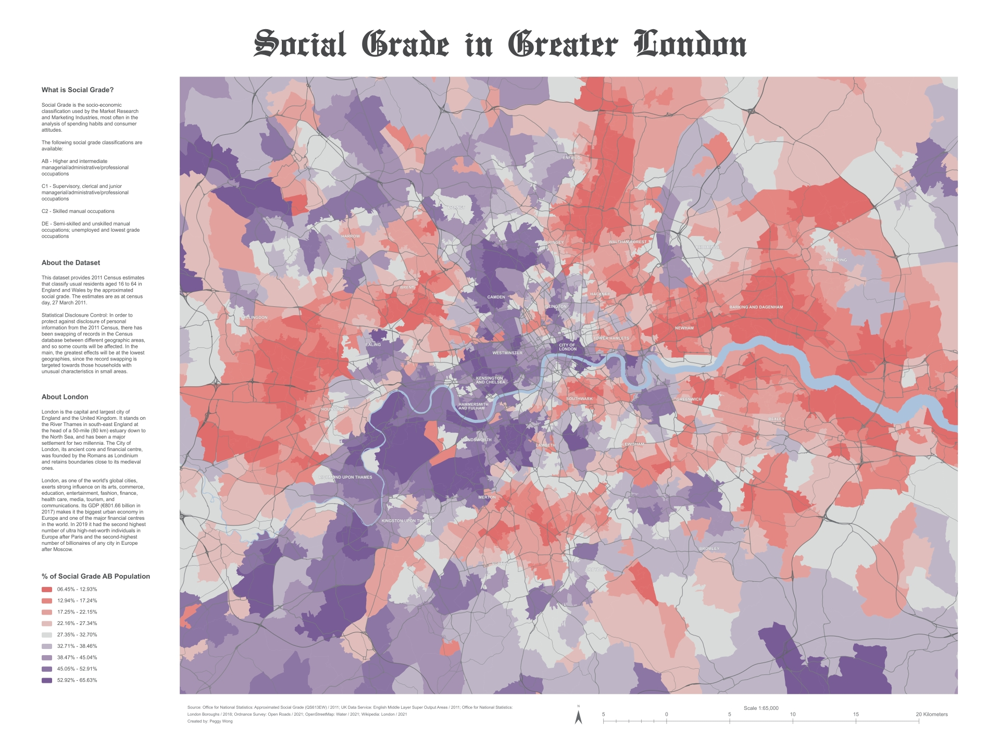

City of Markham - Population Density, 2016 Census
The quantitative map displays the population density of Markham, Ontario, based on the results of the 2016 Census. The color palette for population density was customized strategically to represent differences in magnitude effectively. The areas with higher population density are indicated in darker red, whereas the areas with lower population density are indicated in lighter red.
City of Markham - Canada's Most Diverse Community 1:25,000
The qualitative map displays the land use of Markham, Ontario, at a scale of 1:25,000. The colors for different land use categories were chosen strategically based on cartographic color conventions, after reviewing numerous land use maps of different cities. For example, the residential areas are indicated in yellow, the commercial areas are indicated in red, and the industrial areas are indicated in purple.
City of Markham - Canada's Most Diverse Community 1:100,000
The map displays Markham, Ontario, and its surrounding cities at a scale of 1:100,000. The generalization principles were applied to render data at a smaller scale effectively through various cartographic tools, such as eliminating features that were too small (elimination), removing unnecessary detail without destroying the essential shape of the features (simplification), and combining features in close proximity into a new feature (aggregation).

Social Grade in Greater London
The map displays the distribution of upper classes and lower classes in London, United Kingdom, based on the NRS (National Readership Survey) Social Grades. A diverging color scheme was applied to represent the percentage of upper classes and lower classes in the area. The areas with a higher percentage of upper classes are indicated in blue, whereas the areas with a higher percentage of lower classes are indicated in red.
